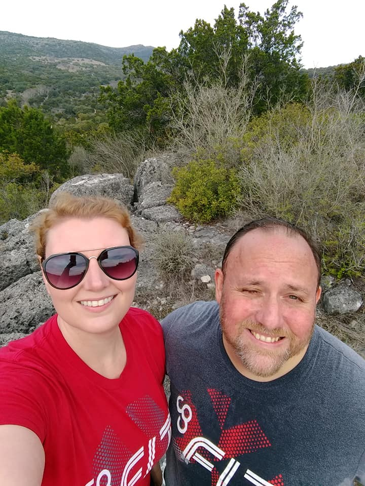

Solution-centric software developer committed to designing and developing solutions to technical problems. High aptitude for building scalable and maintainable software to achieve company goals.
In software development I have found an avenue to express my passion for solving complex problems. I love to take someone's vision and make it a reality. I accomplish this through tenacious research and complex reasoning. If there is a solution I will not stop until I find it.
In my free time I enjoy playing and arranging music. I also enjoy spending time with my wife, Jennifer, and my dog, Alfine
If you would like more information about me check out my resume here